Monkey D. Luffy
Capitão
Monkey D. Luffy é o protagonista da série e o destemido capitão dos Piratas do Chapéu de Palha. Com uma personalidade alegre e um coração puro, Luffy embarca em sua jornada para se tornar o Rei dos Piratas. Ele possui poderes extraordinários graças a uma Fruta do Diabo que o transforma em um Homem Borracha, permitindo que seu corpo estique e se estenda. Luffy é conhecido por sua determinação inabalável, seu amor pela liberdade e sua habilidade em reunir uma tripulação leal e diversificada para enfrentar desafios cada vez maiores em busca do lendário tesouro conhecido como a One Piece. Sua jornada começou no episódio 1, quando zarpou em seu pequeno barco de palha, e desde então ele se tornou um dos piratas mais notórios e respeitados do mundo.
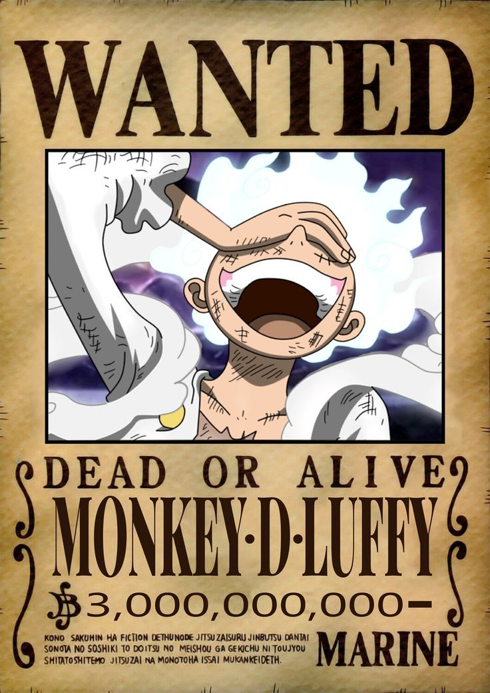Roronoa Zoro
Imediato e espadachim
Roronoa Zoro é o primeiro membro a se juntar à tripulação de Luffy e desempenha o papel de imediato dos Piratas do Chapéu de Palha. Ele é um espadachim habilidoso que sonha em se tornar o melhor espadachim do mundo. Zoro é conhecido por sua devoção às técnicas de espada de três espadas e por sua notável resistência. Ele aceitou o convite de Luffy para se juntar à tripulação no episódio 3, após ser salvo por Luffy de uma execução da marinha.
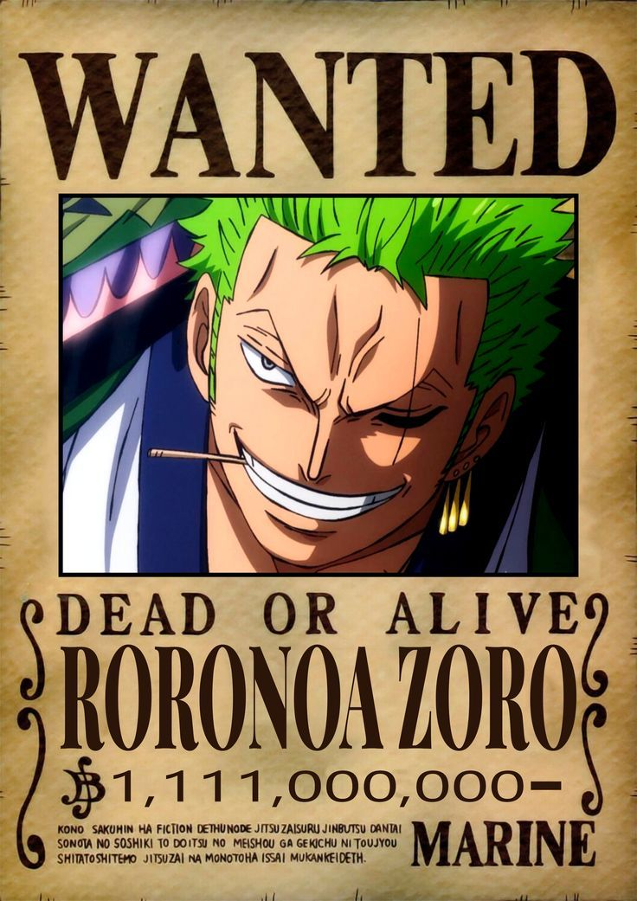Nami
Navegadora
Nami é a segunda pessoa a entrar para os Piratas do Chapéu de Palha, e seu papel vital é o de navegadora. Ela é uma cartógrafa e navegadora extremamente talentosa, capaz de traçar com precisão os complexos mares do Grand Line. Nami inicialmente se juntou à tripulação no episódio 6, quando estabeleceu uma parceria temporária com Luffy e sua equipe para alcançar seus próprios objetivos. Eventualmente, no episódio 43, ela se tornou uma companheira permanente dos Chapéus de Palha, após demonstrar sua lealdade e habilidades excepcionais.
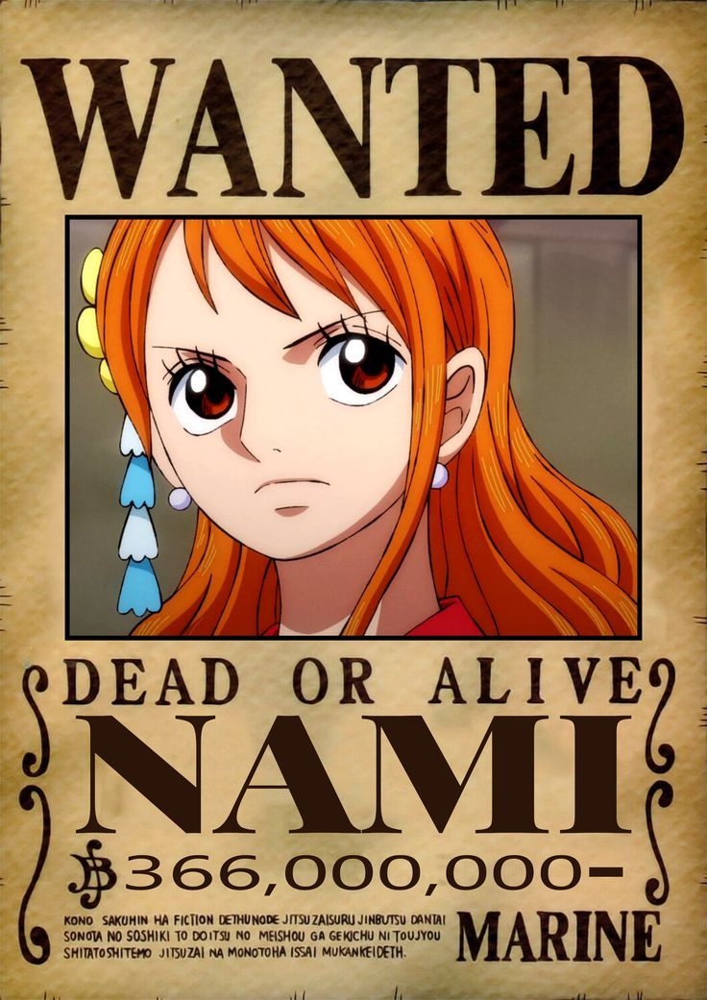Usopp
Atirador
Usopp é o terceiro membro a se juntar à tripulação e desempenha o papel de atirador de longo alcance. Ele é conhecido por suas habilidades de tiro preciso e sua imaginação fértil para criar histórias exageradas. Usopp sonha em se tornar um bravo guerreiro dos mares, inspirado pela figura de seu pai. Ele oficialmente se uniu aos Piratas do Chapéu de Palha no episódio 17, quando Luffy o convidou para ser parte de sua tripulação após salvarem sua ilha juntos.
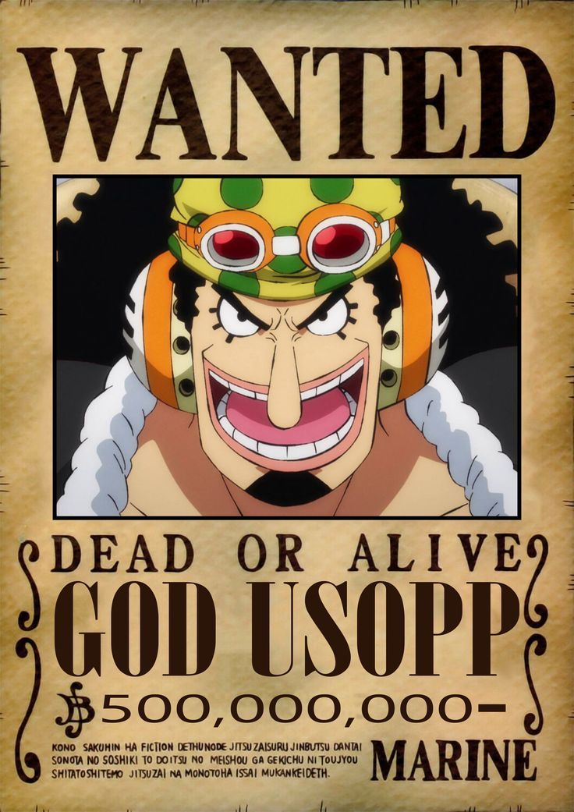Vinsmoke Sanji
Cozinheiro
Sanji é o quarto membro a entrar para os Chapéus de Palha e é o talentoso cozinheiro da tripulação. Ele luta usando o "Estilo Perna Negra" e é conhecido por sua paixão pela culinária e sua gentileza com as mulheres. Após diversos conflitos com diferentes inimigos, Sanji aceitou o convite de Luffy e oficialmente se juntou à tripulação no episódio 30, marcando sua posição como o cozinheiro da equipe.
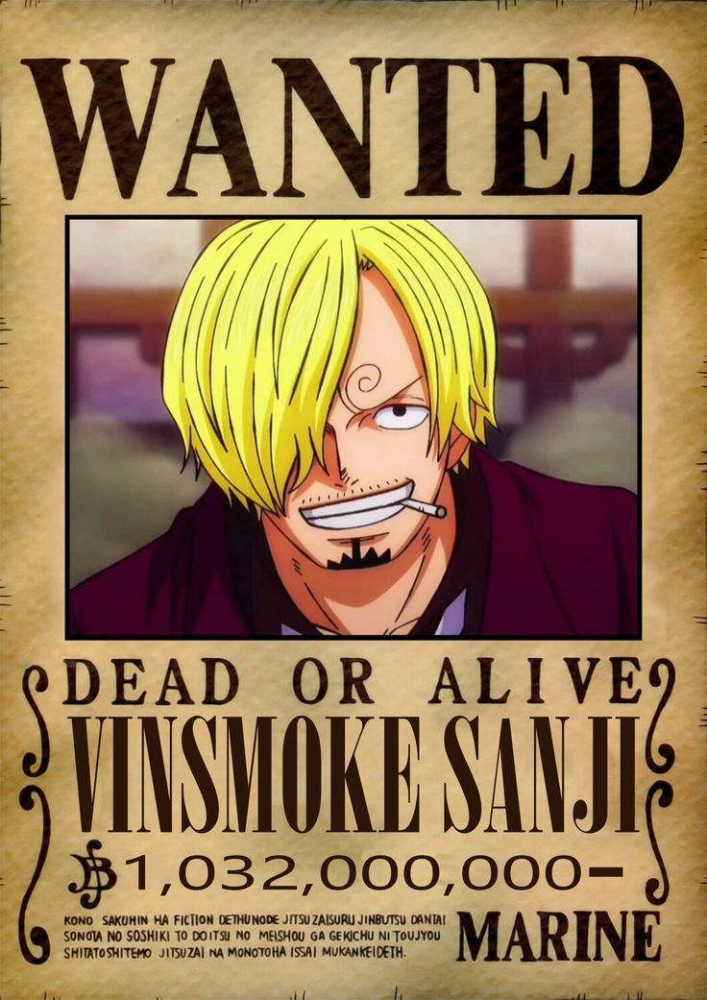Tony Tony Chopper
Médico
Tony Tony Chopper é o quinto membro a se unir à tripulação de Luffy. Ele era originalmente uma rena comum até ingerir a Fruta Hito Hito no Mi, que lhe deu a capacidade de se transformar em diferentes formas humanoides, incluindo uma forma gigante. Chopper é o médico da tripulação e oferece cuidados médicos vitais durante as aventuras do grupo. Ele aceitou o convite para se juntar à tripulação no episódio 91, quando demonstrou sua habilidade médica e seu desejo de ajudar seus novos amigos.
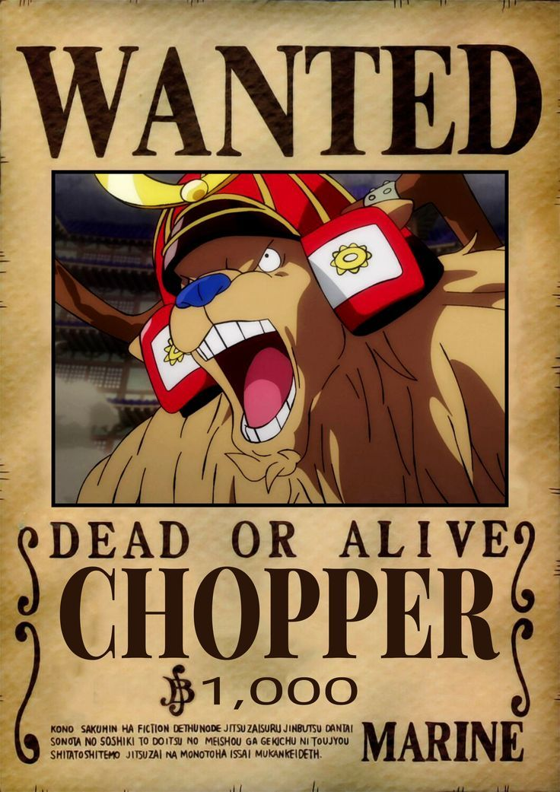Robin
Arqueóloga e historiadora
Sexto pirata a ser recrutado por Luffy, Robin é a arqueóloga dos Piratas do Chapéu de Palha e possui o poder da Hana Hana no Mi, que lhe permite criar partes adicionais do corpo em qualquer lugar. Ela considera que seus colegas de tripulação não apenas a salvaram, mas também reviveram seu sonho de alcançar a liberdade para viajar o mundo estudando seus mistérios. Foi aceita na tripulação ao final do arco de alabasta, no episódio 130.
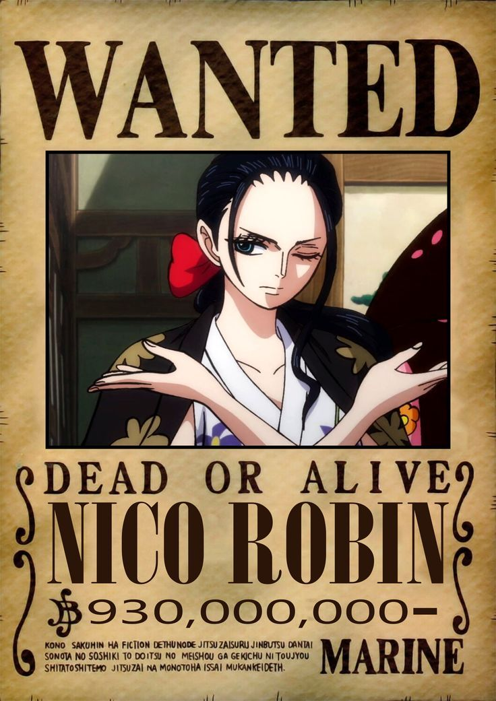Franky
Carpinteiro
Franky é o sétimo membro a se juntar aos Piratas do Chapéu de Palha e é um talentoso carpinteiro e construtor. Ele é responsável pela construção do navio Thousand Sunny, que se tornou a nova embarcação da tripulação. Franky devido às modificações em seu corpo se tornou um Ciborgue. Ele aceitou o convite para fazer parte da tripulação no episódio 322, contribuindo com sua habilidade técnica e sua paixão pela construção.
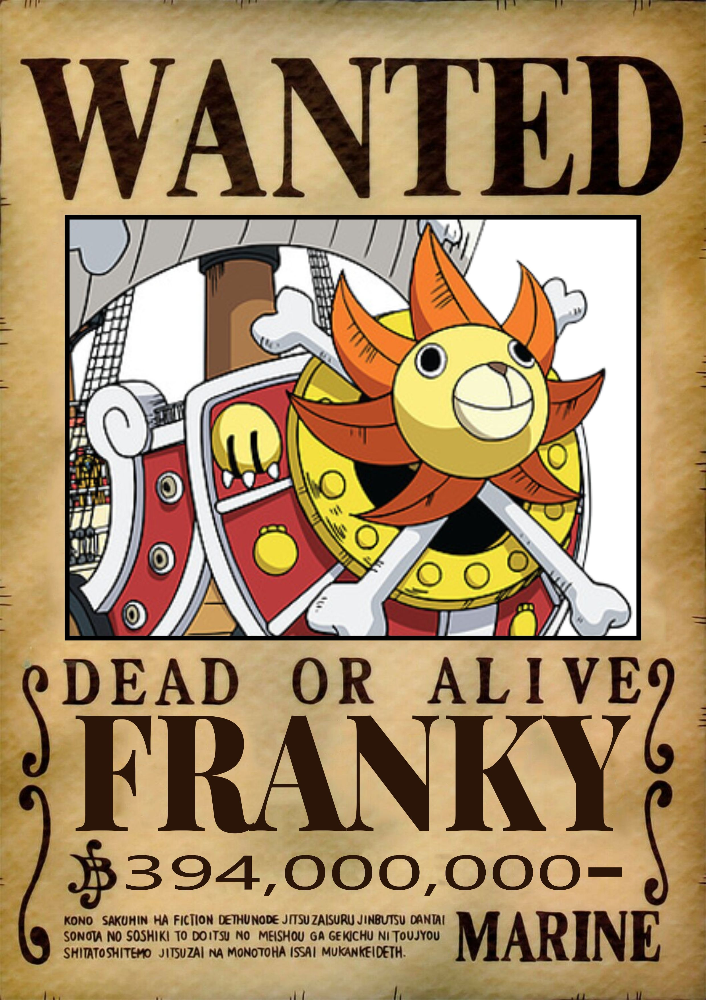Brook
Músico
Oitavo pirata a ser recrutado por Luffy, Brook foi encontrado por Luffy e sua equipe em uma ilha fantasma conhecida como Thriller Bark, no Triângulo Florian. O pirata viveu lá por quase 50 anos após a morte de sua tripulação. Sua antiga equipe foi vítima de doenças e diferentes inimigos. Brook sobreviveu apenas graças à fruta Yomi Yomi no Mi, que lhe proporcionou uma segunda vida como um esqueleto imortal. Ao final do arco Thriller Bark, episódio 381 mais especificamente, o músico pede a Luffy para entrar na tripulação, pedido aceito de imediato pelo capitão.
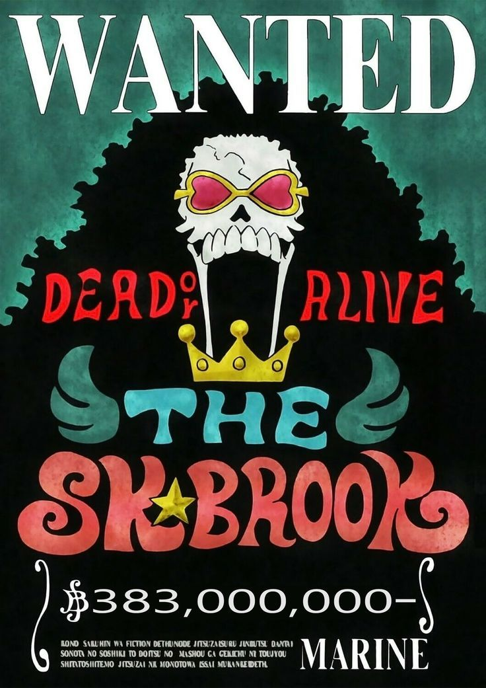Jinbe
Timoneiro
Jinbe é o nono membro a se juntar aos Piratas do Chapéu de Palha e ocupa a posição de timoneiro. Ele é um mestre em artes marciais e um peixe-homem, tornando-o altamente adaptado à vida no mar. Apesar de ter sido convidado a fazer parte do grupo no episódio 568, ele aceitou oficialmente o convite no episódio 833, trazendo suas habilidades de combate e navegação para a tripulação. Jinbe é conhecido por sua sabedoria e profundo respeito pela tripulação.
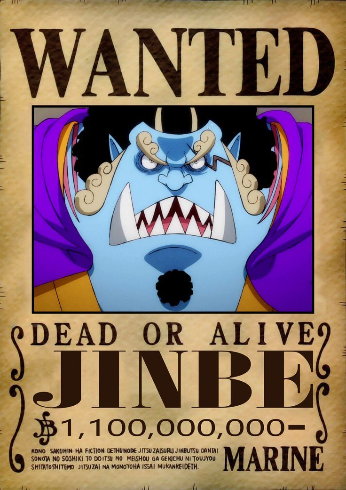Yamato
Ainda não faz parte do grupo efetivamente.
Originalmente filha de Kaidou, um dos Quatro Imperadores, Yamato foi contra sua criação para se tornar a herdeira que seu pai esperava. Yamato se uniu a Luffy e à Aliança Ninja-Pirata-Mink-Samurai e pediu para o capitão ajudá-lo a realizar o sonho de Oden de abrir as fronteiras de Wano. Ele foi um dos responsáveis por derrotar Kaidou e os Piratas Beasts, e confiou a Luffy seu sonho de acompanhar sua tripulação e viajar pelo mundo. Embora ainda não tenha sido oficialmente recrutada por Luffy, já expressou o desejo de ingressar na tripulação e compartilha os ideais de liberdade e aventura que caracterizam os Piratas do Chapéu de Palha.
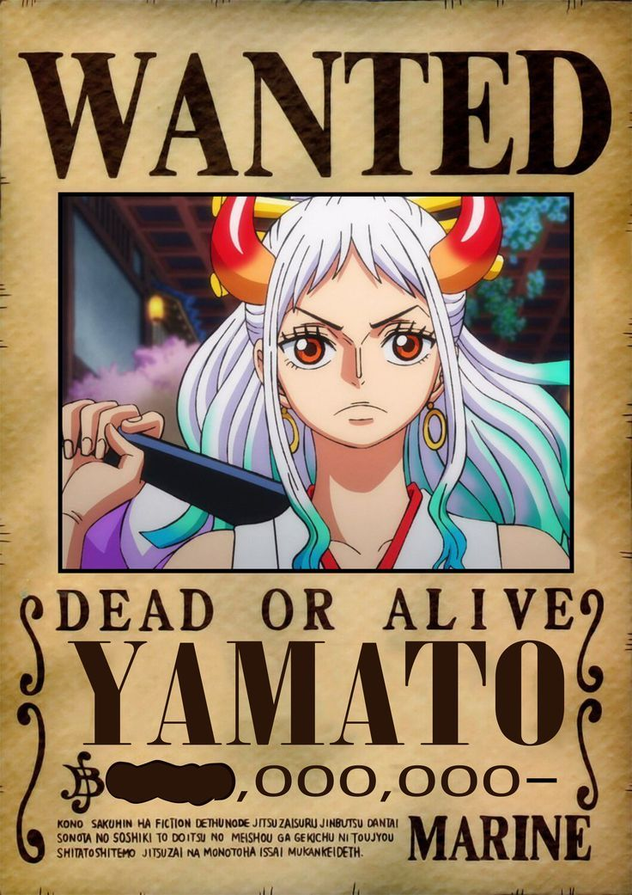